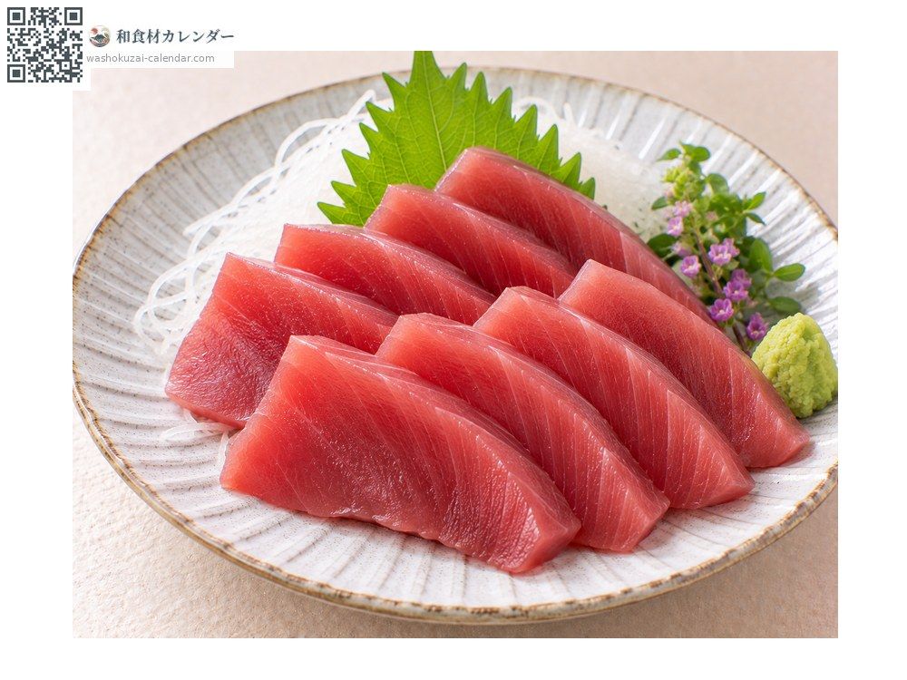
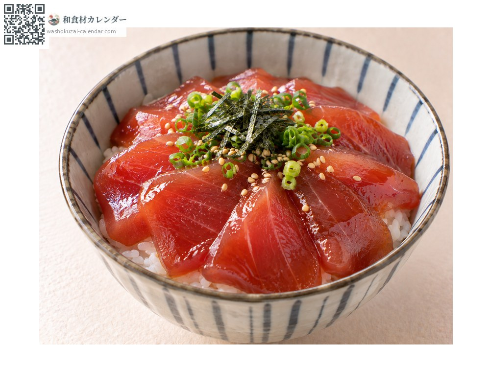
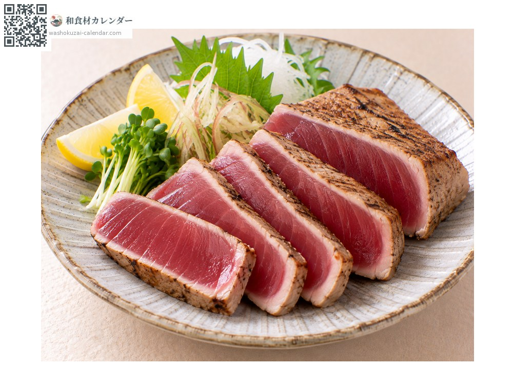
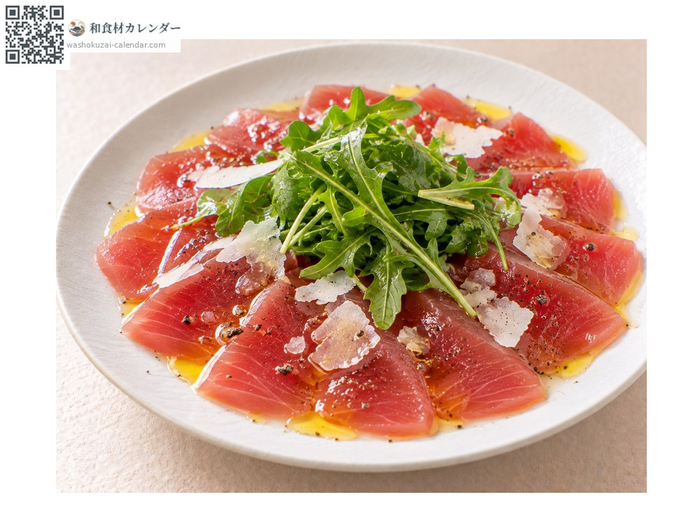

Seafood
Yellowfin tuna
キハダマグロ きはだまぐろ
At its best in Jun, Jul, Aug, Sep

When it is at its best
Jan
Feb
Mar
Apr
May
Jun
Jul
Aug
Sep
Oct
Nov
Dec
In seasonAvailable
How to cook

Sashimi
Lean and clean-tasting, and favoured in summer.

Zuke
Marinated in soy sauce, which lifts the flavour of the lean flesh.

Steak
Seared outside and left rare within; it suits Western cooking too.

Carpaccio
Sliced thin and dressed with olive oil and salt.
How to choose
Steaks should be a vivid red with a translucent look and even grain.
Storage
Refrigerate and use the same day. It discolours easily, so wrap it tightly against the flesh.
Main areas
Good to know
Named for its yellow fins. Leaner than bluefin and more affordable, it is favoured in Kansai as the tuna of summer, and lands in greater quantity than any other tuna. It is also widely used for canned tuna.
At their best around the same time
 Japanese horse mackerel
Japanese horse mackerel White trevally
White trevally Japanese sardine
Japanese sardine Gizzard shad
Gizzard shad Pacific saury
Pacific saury Greater amberjack
Greater amberjack Skipjack tuna
Skipjack tuna Flying fish
Flying fish